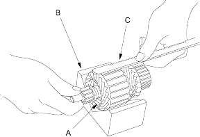
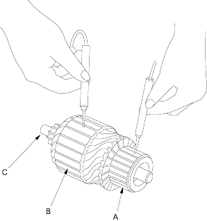
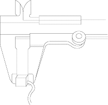

- Place the armature (A) on an armature tester (B). Hold a hacksaw blade (C) on the armature core. If the blade is attracted to the core or vibrates while the core is turned, the armature is shorted. Replace the armature.

- Check with an ohmmeter that no continuity exists between the commutator (A) and armature coil core (B) and between the commutator and armature shaft (C). If continuity exists, replace the armature.

Starter Brush Inspection
- Measure the brush length. If it is not within the service limit, replace the armature housing assembly.
Brush Length
D16Z6, D16V1 (KE model), D16V3 engines:
Standard (New):9.7 - 10.3 mm (0.38 - 0.41 in.)
Service Limit:6.0 mm (0.24 in.)
D16V1 (KG, KR, KS models) engines with A/T:
Standard (New):14.0 - 14.5 mm (0.55 - 0.57 in.)
Service Limit:9.0 mm (0.35 in.)
D16V1 (KG, KR, KS models) engine with M/T:
Standard (New):18 mm (0.7 in.)
Service Limit:5 mm (0.2 in.)
